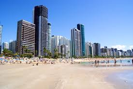

A Praia de Boa Viagem é um dos principais cartões-postais do Recife, famosa por sua extensa faixa de areia, coqueirais e piscinas naturais formadas pelos recifes. Localizada na Zona Sul da cidade, é ideal para caminhadas, banhos de sol e apreciar o movimento animado. A orla é bem estruturada, com ciclovias, quiosques e restaurantes que servem pratos típicos da culinária pernambucana. Apesar da beleza, é importante seguir as orientações de segurança devido à presença de tubarões em áreas mais profundas. Boa Viagem combina lazer, natureza e infraestrutura, sendo um ponto turístico imperdível na capital pernambucana.
